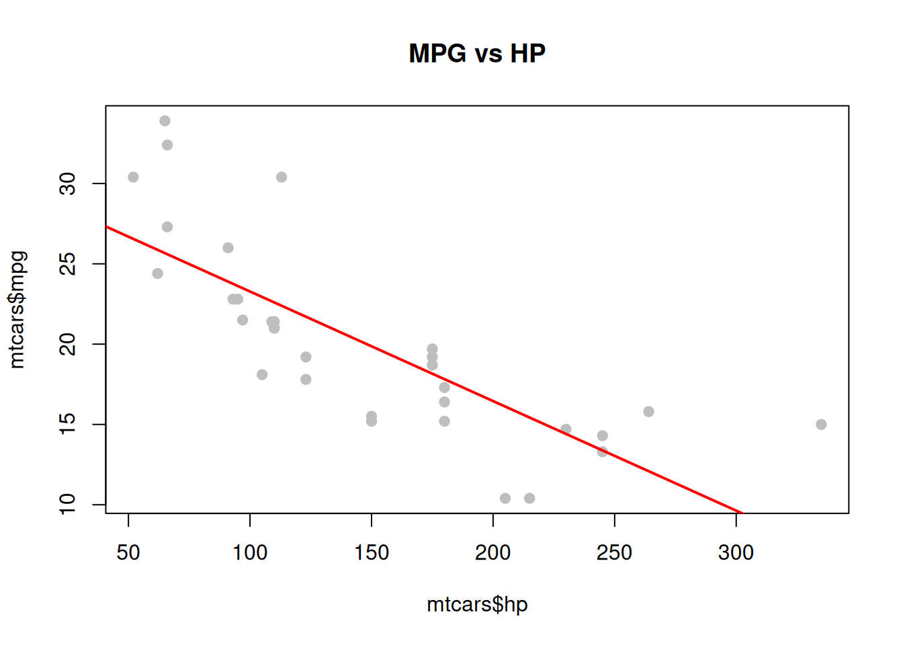

x <- 1:10
y <- x^2
y [1] 1 4 9 16 25 36 49 64 81 100.qmd. Isso torna possÃvel gerar relatórios dinâmicos, gráficos, análises estatÃsticas e visualizações interativas, tudo integrado ao texto.
↠Voltar para o Guia de Leitura de Programação 👨‍💻
↠Voltar para a Seção de R 📊
↠Voltar para a Seção de Programação 👨‍💻

O Quarto permite a execução direta de blocos de código R em arquivos .qmd.
Isso torna possÃvel gerar relatórios dinâmicos, gráficos, análises estatÃsticas e visualizações interativas, tudo integrado ao texto.
O trecho abaixo é o cabeçalho YAML do documento .qmd, que define tÃtulo, autor, data, formato de saÃda e opções de execução do código R:
---
title: "Modelos de Código em R para Usar com Quarto"
author: "Blog do Marcellini"
date: 2025-06-23
format: html
editor: visual
lang: pt-BR
execute:
engine: knitr
echo: true
warning: false
message: false
---x <- 1:10
y <- x^2
y [1] 1 4 9 16 25 36 49 64 81 100plot(x, y, type = "b", col = "blue", main = "Gráfico de x²", xlab = "x", ylab = "y = x²")
library(ggplot2)
df <- data.frame(x = x, y = y)
ggplot(df, aes(x, y)) +
geom_line(color = "red", size = 1.2) +
geom_point(color = "blue") +
labs(title = "Gráfico com ggplot2", x = "x", y = "x²")
summary(mtcars) mpg cyl disp hp
Min. :10.40 Min. :4.000 Min. : 71.1 Min. : 52.0
1st Qu.:15.43 1st Qu.:4.000 1st Qu.:120.8 1st Qu.: 96.5
Median :19.20 Median :6.000 Median :196.3 Median :123.0
Mean :20.09 Mean :6.188 Mean :230.7 Mean :146.7
3rd Qu.:22.80 3rd Qu.:8.000 3rd Qu.:326.0 3rd Qu.:180.0
Max. :33.90 Max. :8.000 Max. :472.0 Max. :335.0
drat wt qsec vs
Min. :2.760 Min. :1.513 Min. :14.50 Min. :0.0000
1st Qu.:3.080 1st Qu.:2.581 1st Qu.:16.89 1st Qu.:0.0000
Median :3.695 Median :3.325 Median :17.71 Median :0.0000
Mean :3.597 Mean :3.217 Mean :17.85 Mean :0.4375
3rd Qu.:3.920 3rd Qu.:3.610 3rd Qu.:18.90 3rd Qu.:1.0000
Max. :4.930 Max. :5.424 Max. :22.90 Max. :1.0000
am gear carb
Min. :0.0000 Min. :3.000 Min. :1.000
1st Qu.:0.0000 1st Qu.:3.000 1st Qu.:2.000
Median :0.0000 Median :4.000 Median :2.000
Mean :0.4062 Mean :3.688 Mean :2.812
3rd Qu.:1.0000 3rd Qu.:4.000 3rd Qu.:4.000
Max. :1.0000 Max. :5.000 Max. :8.000 hist(mtcars$mpg, col = "lightblue", main = "Distribuição de MPG", xlab = "Milhas por galão")
Call:
lm(formula = mpg ~ hp, data = mtcars)
Residuals:
Min 1Q Median 3Q Max
-5.7121 -2.1122 -0.8854 1.5819 8.2360
Coefficients:
Estimate Std. Error t value Pr(>|t|)
(Intercept) 30.09886 1.63392 18.421 < 2e-16 ***
hp -0.06823 0.01012 -6.742 1.79e-07 ***
---
Signif. codes: 0 '***' 0.001 '**' 0.01 '*' 0.05 '.' 0.1 ' ' 1
Residual standard error: 3.863 on 30 degrees of freedom
Multiple R-squared: 0.6024, Adjusted R-squared: 0.5892
F-statistic: 45.46 on 1 and 30 DF, p-value: 1.788e-07plot(mtcars$hp, mtcars$mpg, pch = 19, col = "gray", main = "MPG vs HP")
abline(modelo, col = "red", lwd = 2)
| mpg | cyl | disp | hp | drat | wt | qsec | vs | am | gear | carb | |
|---|---|---|---|---|---|---|---|---|---|---|---|
| Mazda RX4 | 21.0 | 6 | 160 | 110 | 3.90 | 2.620 | 16.46 | 0 | 1 | 4 | 4 |
| Mazda RX4 Wag | 21.0 | 6 | 160 | 110 | 3.90 | 2.875 | 17.02 | 0 | 1 | 4 | 4 |
| Datsun 710 | 22.8 | 4 | 108 | 93 | 3.85 | 2.320 | 18.61 | 1 | 1 | 4 | 1 |
| Hornet 4 Drive | 21.4 | 6 | 258 | 110 | 3.08 | 3.215 | 19.44 | 1 | 0 | 3 | 1 |
| Hornet Sportabout | 18.7 | 8 | 360 | 175 | 3.15 | 3.440 | 17.02 | 0 | 0 | 3 | 2 |
| Valiant | 18.1 | 6 | 225 | 105 | 2.76 | 3.460 | 20.22 | 1 | 0 | 3 | 1 |
if
valor <- mean(mtcars$mpg)
if (valor > 20) {
print("A média de MPG é alta.")
} else {
print("A média de MPG é baixa.")
}[1] "A média de MPG é alta."Com Quarto e R, é possÃvel integrar texto, código e resultados em um único documento dinâmico e reprodutÃvel.
Esses modelos são um ponto de partida para criar relatórios estatÃsticos e cientÃficos com alto padrão profissional.
↠Voltar para o Guia de Leitura de Programação 👨‍💻
↠Voltar para a Seção de R 📊
↠Voltar para a Seção de Programação 👨‍💻
🔠Voltar ao Topo
Blog do Marcellini — Explorando a Matemática, a EstatÃstica e a FÃsica com Rigor e Beleza.
Criado por Blog do Marcellini com ❤️ e código.